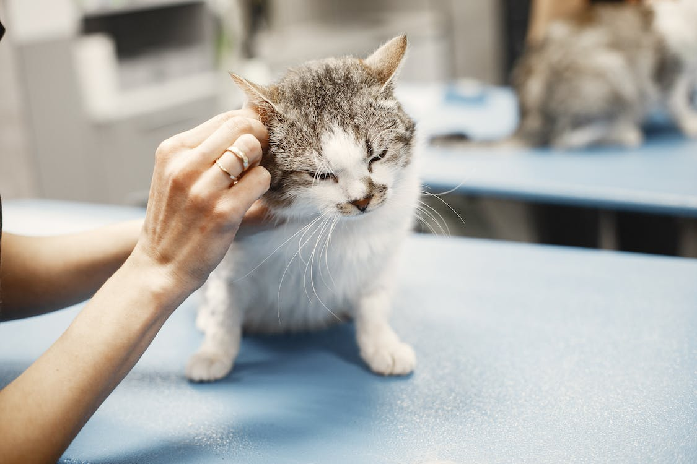
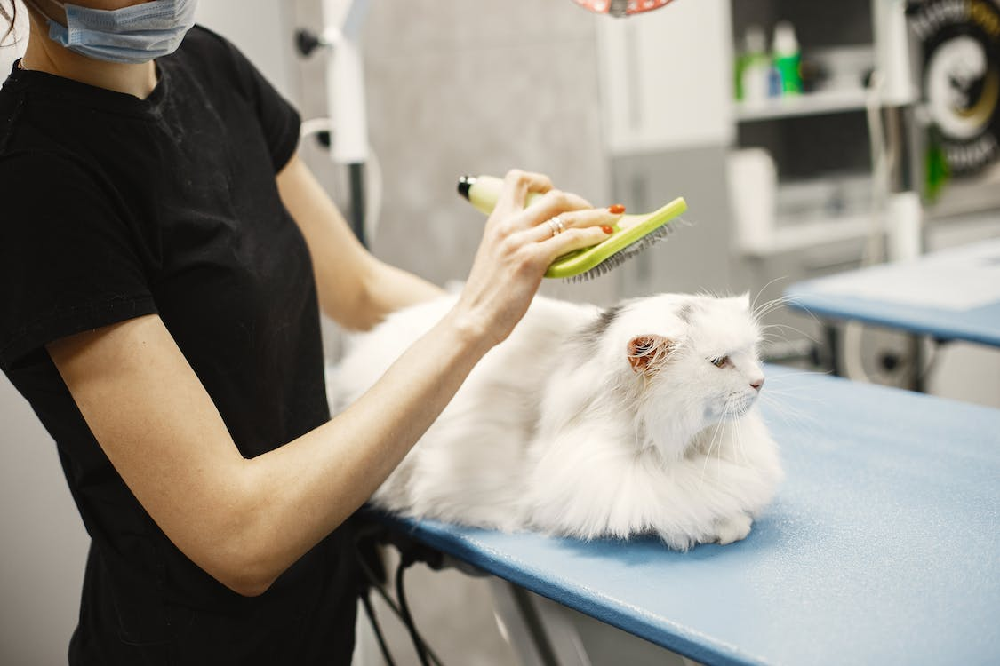
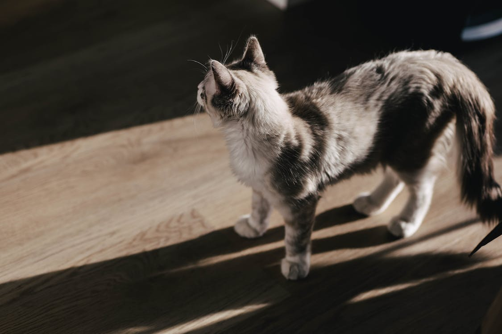
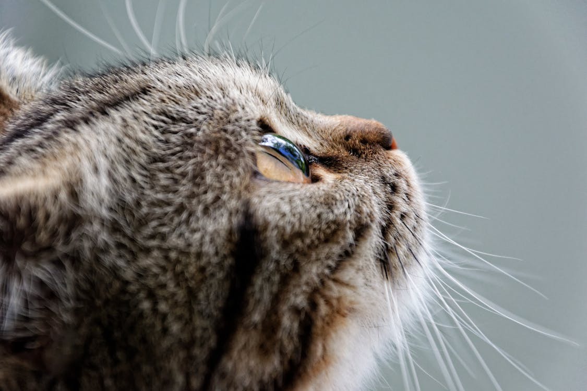

Oh My Paw
A cattery for all, big and small
Our cat care services
At Oh My Paw, we provide our little visitors with personalised cat sitting that is tailored to your needs. Each member of our staff has undergone a thorough screening process, is bonded and insured, and has received training on the
specifics of cat behaviour.
You can be sure that your fluffy friends are in good hands!
Veterinary services
When selecting a pet centre to look after your cat’s requirements, there are numerous factors to be taken into account. Every pet parent should place trust at the top of their priority list. You can be sure that when your cat is with us at Oh My Paw, they are in capable and caring hands.
Oh My Paw veterinary clinic consists of well trained nurses that offer a variety of medications in order to cater your cat’s needs. Such as vaccinations, flea,
tick and worm treatments, blood tests and more!
Grooming
It’s important to keep your fluffy friends clean and smelling their best, therefore, we offer our greatest grooming services which consist of a bath, a blow dry, claw clippings, ear cleaning and flea treatment.
Outdoor facilities
Whether your fluffy friend likes to explore the outside world, or if they prefer to keep themselves cosy at home - Oh My Paw offers safe and ensured outdoor enclosures, in which your cat can enjoy a breath of fresh air.
As well as...
✓ A variety of foods to accommodate different diets.
✓ Scratching posts.
✓ Loads of room to provide space.